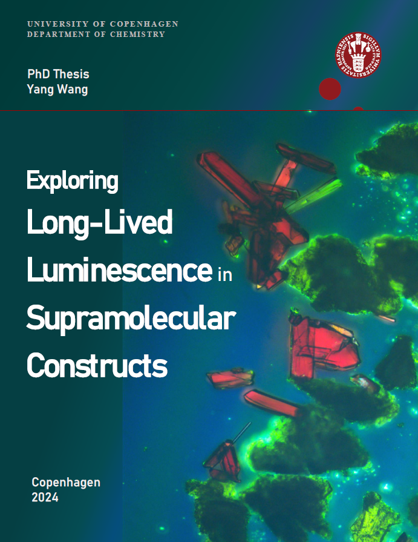
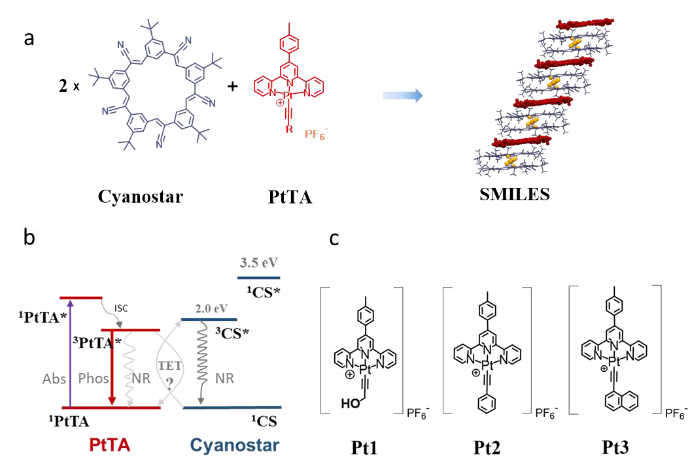
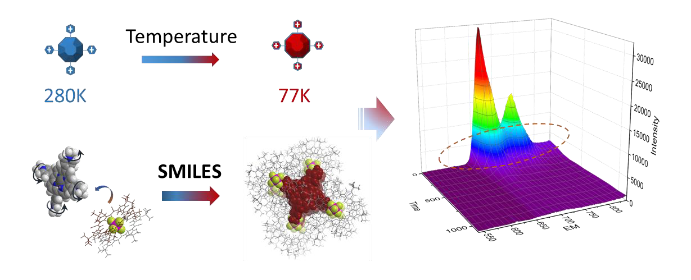
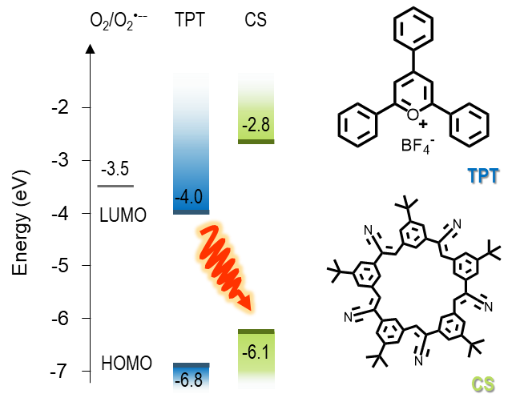
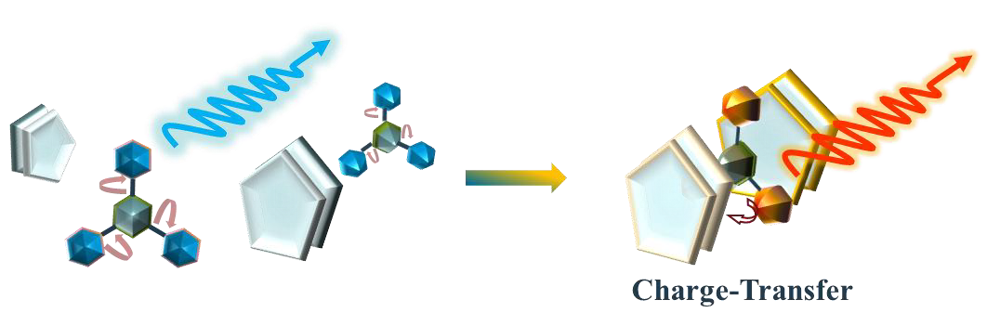

Research
My work sits across three connected domains — from academic photophysics to industrial analytics.
Fluorescent Materials
Molecular self-assemblies and carbon dots — how structure and packing control emission color, lifetime, and stability.
Analytical Chemistry
Method development and validation across UV-Vis, fluorescence, HPLC, DLS and TEM — from academic characterization to industrial QC and deciphering reaction mechanisms.
Spectroscopy & Chemometrics
Spectroscopy paired with multivariate statistics (PCA, PLS) to monitor reaction kinetics and turn spectral data into decisions.
Spectroscopy & chemometrics
Applying spectroscopy and multivariate statistics to industrial and biological samples at FOSS and, previously, NordicBlue.
Applied spectroscopy
UV-Vis and fluorescence spectroscopy to decipher enzymatic reaction mechanisms and monitor kinetics at NordicBlue, and to track product purity and colorant stability during process optimization.
Chemometrics & multivariate analysis
PCA and PLS regression in MATLAB to model molecular interactions from spectral data — around 30% higher analytical accuracy in a recent project.
Long-lived luminescence in supramolecular constructs
Marie-Curie Doctoral Fellow. Supervisors: Prof. Bo Wegge Laursen (Copenhagen), Prof. Amar H. Flood (Indiana University).
How to generate long-lived, room-temperature luminescence from dyes by controlling how they pack in the solid state — using a host anion, cyanostar, to isolate emissive molecules from each other and oxygen in structures called SMILES (Small-Molecule Ionic Isolation Lattices).

Exploring Long-Lived Luminescence in Supramolecular Constructs
PhD Thesis, Department of Chemistry, University of Copenhagen, 2024.
Host–guest design, triplet energy transfer & nanoparticle emitters
Host–guest chemistry
Triplet energy transfer
Phosphorescent PtTA & porphyrin dyes
Nanoparticle emitters
Measured the triplet energies of cyanostar and its anion complexes via Stern-Volmer analysis, establishing the energy-matching criterion needed to keep a phosphorescent guest dye emissive. Packing matched platinum dyes (Pt1–Pt3) into SMILES crystals and nanoparticles suppressed non-radiative decay, prolonging phosphorescence; extending this to a metalloporphyrin dye (Por4) gave nanoparticles with red, millisecond-lifetime emission — SMILES substituting for cryogenic conditions at room temperature.

Cyanostar + PtTA dye → SMILES stack; energy-level matching; Pt1–Pt3 structures.

SMILES mimics cryogenic rigidity (280 K → 77 K) at room temperature.
Charge-transfer emission & donor–acceptor design
Donor–acceptor systems
HOMO–LUMO energetics
Charge-transfer emission
Long-lived excited states
A different route to long-lived emission: activating cyanostar itself as an electron acceptor, paired with a fluorophore (TPT) whose HOMO/LUMO levels straddle its own. Solids with varying CS:TPT ratios showed a long-lived charge-transfer excited state distinct from ordinary fluorescence — a second general strategy, alongside phosphorescence, for prolonging emission in SMILES.

HOMO/LUMO alignment of TPT and cyanostar sets up the donor–acceptor pair.

Excitation of the pair produces long-lived charge-transfer emission.
Polymers & fluorescent carbon dots
Carbon-based nanomaterials and polymer science — carbon dots and how polymer composition tunes their fluorescence.
Fluorescent carbon dots
Prepared polysiloxane-functionalized carbon dots (2.2–6.4 nm), tuning absorption and emission via aminopropyl content — improving stability and quantum yield over conventional carbon dots.
Polymer science & industrial application
Later translated this into an industrial protocol at Laird Ltd. for fluorescently tracking silicone-oil leakage in thermal pads — leading to a granted patent and two publications.
Publications & patents
- 1.Y. Wang, M. Heine, B. W. Laursen, A. H. Flood. Translating Molecular Phosphorescence to Materials by Supramolecular Organization in Small-Molecule Ionic Isolation Lattices. (manuscript in preparation)
- 2.F. Edhborg, A. Olesund, V. Tripathy, Y. Wang, T. Sadhukhan, A. H. Olsson, N. Bisballe, B. W. Laursen, B. Albinsson, A. H. Flood. Triplet State of Cyanostar and Its Anion Complexes. Journal of Physical Chemistry A, 2023, 127, 5841–5850. doi:10.1021/acs.jpca.3c02701
- 3.J. Shen, Y. Wang, Y. Feng. Tuning Photoluminescence of Polysiloxane Functionalized Carbon Dots Through Changing Polysiloxane Compositions. Polymers for Advanced Technologies, 2023, 34(9), 2936–2945. doi:10.1002/pat.6115
- 4.Y. Wang, Y. Feng. Research Advances on Application of Polymer in Carbon Dots. Chemical Industry and Engineering, 2020/2021, 38(3), 28–35. doi:10.13353/j.issn.1004.9533.20200346
- 5.Y. Wang. Exploring Long-Lived Luminescence in Supramolecular Constructs. PhD Thesis, Department of Chemistry, University of Copenhagen, 2024. Download PDF
- Patent Y. Feng, Y. Wang, X. Feng, et al. Carbon Quantum Dot Silicone Resin with Adjustable Fluorescence Luminescence, Preparation Method and Applications. CN 110041914 B